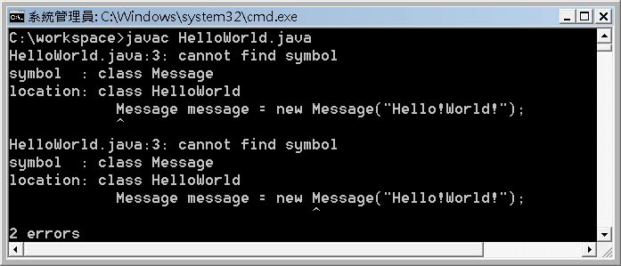
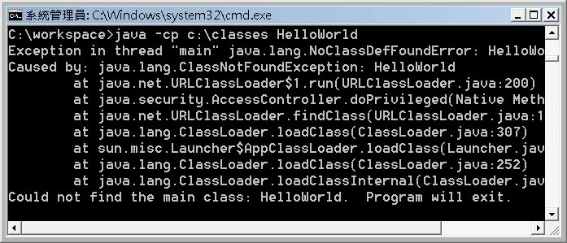

假 設你在C:\workspace下寫了個HelloWorld.java，並順利使用編譯器javac將之編譯為HelloWorld.class，在不 切換路徑的情況下，可以直接執行java HelloWorld來載入HelloWorld.class並運行當中所定義的行為。
如果你切換到C:\底下或是其它路徑底下，那麼該如何載入HelloWorld.class並執行呢？以下並不是正解：
java C:\workspace\HelloWorld
首先你要知道java這個指令是作什麼用的？執行java，其實就是啟動JVM，之後接下類別名稱，表示由JVM載入該類別的.class並執行。
在 PATH 是什麼？ 中提過，當你在實體作業系統下執行某個指令時，作業系統會依PATH中的路徑資訊，試圖找到可執行的檔案（例如對Windows來說，就是.exe、.bat，對Linux等就是有執行權限的檔案）。
在 為什麼需 要 JVM？ 中則提過，JVM是Java程式唯一認得的作業系統，對JVM來說，可執行檔就是副檔名為.class的檔案。當你要想在JVM中執行某個它的可執行檔（.class）時，則JVM會依CLASSPATH中的路徑資訊來尋找。
作個簡單的比照，可以很清楚地對照PATH與CLASSPATH：
實體作業系統依PATH中的路徑資訊來尋找可執行指令（對Windows就是.exe、.bat等，對Linux等就是有執行權限的檔案）。
JVM（虛擬作業系統）依CLASSPATH中的路徑資訊來尋找可執行指令（.class檔案）。
JVM（虛擬作業系統）依CLASSPATH中的路徑資訊來尋找可執行指令（.class檔案）。
如何在啟動JVM時告知可執行檔（.class）的位置？可以使用-classpath引數來指定：
java -classpath c:\workspace HelloWorld
指定可執行檔（.class）時，不用加上.class副檔名，這跟在Windows下執行javac時，不用特別再加上副檔名（javac.exe）是類似的。如果有多個路徑資訊，則可以用分別區隔。-classpath有個縮寫形式-cp。例如：
java -cp c:\workspace;c:\classes HelloWorld
與PATH類似地，JVM會依路徑的順序，找尋是否有對應的類別檔案，先找到先贏，先找到先載入。如果在JVM的CLASSPATH路徑資訊中都找不到指定的類別檔案，則會出現java.lang.NoClassDefFoundError的資訊。
如 果使用Java開發了一些程式作為程式庫，這些程式庫中的類別檔案，會封裝為JAR（Java Archive）檔案，也就是副檔名為.jar的檔案。JAR檔案實際上是使用ZIP格式作壓縮，當中包含一堆.class檔案，之後還會介紹如何製作 JAR檔案。總之，現在如果你拿到一個JAR檔案，如何在CLASSPATH中設定？
答案是將JAR檔案當作一個特別的資料夾，例如，你拿到一個abc.jar與xyz.jar，放在C:\lib底下，則執行時如果使用到該JAR檔案中的類別，則可以如下：
java -cp c:\workspace;c:\lib\abc.jar;c:\lib\xyz.jar SomeApp
在使用IDE的時候，會在IDE的專案中設定（或有時稱匯入）所謂的「程式庫」，其實就是在IDE專案環境下的CLASSPATH中設定JAR檔案的位置與名稱。
事實上，不只執行時可以設定CLASSPATH，編譯時也會需要設定CLASSPATH，例如你開發了一個Message.java：
public class Message {
private String text;
public Message(String text) {
this.text = text;
}
public String getText() {
return text;
}
}編譯完的Message.class是放在c:\classes之下。現在你在c:\workspace下寫了個HelloWorld.java：
public class HelloWorld {
public static void main(String[] args) {
Message message = new Message("Hello!World!");
System.out.println(message.getText());
}
}如果你直接編譯HelloWorld.java，則會出現以下的訊息：

表面字義看來，叫作不認得Message是什麼符號，這其實是編譯器不知道你的Message定義檔在哪？也就是編譯器找不到Message.class在哪！你在編譯時，必須告知所使用到的類別檔案是放在哪邊，指定的方式也是靠CLASSPATH：
javac -cp c:\classes HelloWorld.java
編譯器如果看到原始碼中有使用到Message這個名稱，就會試著找看看在類別路徑中，有無Message.class，如果有就讀取剛中的資訊，看看相關方法等定義是否正確，然後才進行編譯。
那麼要執行時，也是得指定CLASSPATH，不過以下指定卻會發生問題：

原 因其實很簡單，因為你指定的類別路徑是c:\classes，所以JVM只在c:\classes下找相關的.class檔案，而當中並沒有 HelloWorld.class，因為HelloWorld.class是位於c:\workspace下。你要這樣指定才正確：
java -cp c:\workspace;c:\classes HelloWorld
那為什麼執行第一個HelloWorld時，不用特別指定CLASSPATH？預設的CLASSPATH就會讀取當前目錄下的.class，但是如果你自行指定了CLASSPATH，則以你指定的為主。
如果有些類別路徑很常使用，則你也可以透過環境變數設定，例如：
SET CLASSPATH=C:\classes;c:\lib\abc.jar;c:\lib\xyz.jar
當 你啟動JVM時，也就是執行java時，或者是編譯時，也就是使用javac時，不指定CLASSPATH，則會讀取環境變數資訊中的CLASSPATH 變數設定。同樣地，這個設定在關閉這個文字模式之後，就會失效，下次必須重新設定。如果你希望每次開啟文字模式都可以套用某個CLASSPATH設定的 話，則可以設定在系統變數或使用者變數中。如果你執行或編譯時，使用了-cp或-classpath來指定類別的路徑所在，則以-cp或-classpath設定的為主。
實際上，CLASSPATH的路徑設定，是給應用程式類別載入器（AppClassLoader）使用的資訊。想要了解類別載入的方式，則要了解類別載入器機制，這是進階議題，要在較後面的文件中才會談到。
在Java SE 6前，如果目錄下有很多.jar檔案，則要一個一個.jar檔案分別指定，才可以正確的設定Classpath，例如您可能在執行程式時，如下指定Classpath：
java –cp .;c:\jars\a.jar;c:\jars\b.jar cc.openhome.JNotePad
在Java SE 6中，您可以使用'*'來指定某個目錄下的所有.jar檔案，例如上例在Java SE 6中，可以如下指定：
java –cp .;c:\jars\* cc.openhome.JNotePad
Java SE 6中Classpath新的指定方式，也適用在系統環境變數的設定上。
<